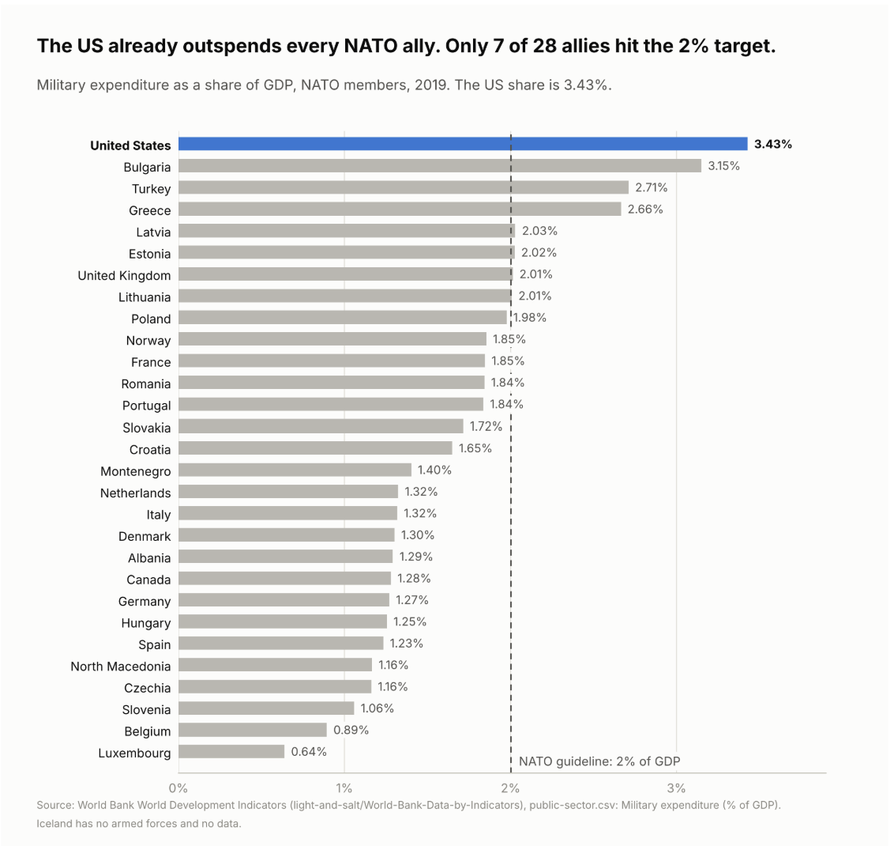
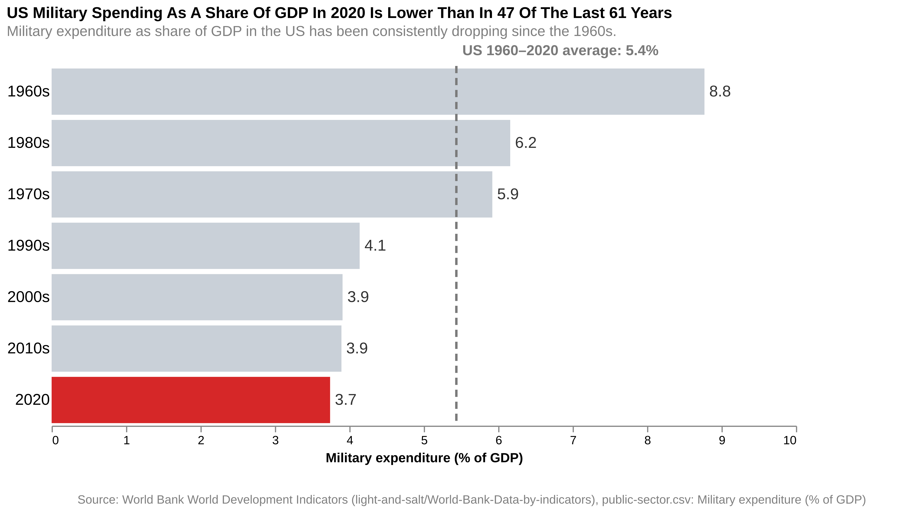

Proposition: The U.S Government Spends Too Much On Military
FOR the Proposition

Design Decisions and Rationale:
- Rationale 1: We only compared the U.S. to the other 28 NATO members and only used 2019, the last year before COVID. Since NATO countries all share the same 2% guideline, it made sense to compare them, but it also leaves out the 14 countries that spent a bigger share of GDP than the U.S. in 2019, like Saudi Arabia and Russia. Showing one year also hides that more allies reach 2% every year (2 in 2014, 7 in 2019, and 11 in 2020). Deception Score: -1.
- Rationale 2: We used military spending as a share of GDP instead of total dollars, sorted the countries from highest to lowest, and made only the U.S. bar blue while the rest are gray. Share of GDP is what NATO uses and is fairer to smaller countries, and the blue bar at the top is the first thing people notice. Total dollars would have looked even more extreme ($734B for the U.S. vs. $311B for all the allies combined), but one huge bar would look one-sided. We also thought about making the U.S. red, but felt it would make our bias too obvious. Deception Score: 1.5.
- Rationale 3: We added a dashed line at NATO's 2% guideline and titled the graph "Only 7 of 28 allies hit the 2% target." This makes the U.S. at 3.43% look like it is doing much more than it needs to while the allies are not paying their share. The 2014 NATO agreement only asked countries to move toward 2% by 2024, so calling it a missed target in 2019 is a bit misleading. We did label the values to two decimals so Poland (1.98%) does not look like it met the guideline. Deception Score: -1.
AGAINST the Proposition

Design Decisions and Rationale:
- Rationale 1: We chose a bar graph that ranks each decade and a single year of 2020. While 2020 is a single year, we believe that grouping years into decades can smooth out the year-to-year noise better than 5-year intervals or showing every year, and will further highlight the decline in military spending of the US government. Deception Score: 1.
- Rationale 2: We calculated the average spending of the whole 61 years (5.4%), and marked the 2020 year bar as red. This makes the ranking easier to follow, attracting audience to 2020 first, and the color red can be used to trick viewers into perceiving this as an alarm. Deception Score: 0.5.
- Rationale 3: We deliberately did not compare the U.S. with other nations in this graph, and omitted the NATO guideline. This helped us hide the difference between the U.S. and other countries, but it ignored the historical and political context that might lead to the decline or the rank of U.S internationally. Deception Score: -1.
Final Reflection
Throughout our group’s design process, we found that it was fairly easier to be able to make basic, honest decisions than to make ones that are more deceiving. After examining the 1960–2020 World Bank dataset, we were able to do some simple exploratory data analysis to see the relationships between variables and decide on our propositions and how to display them in a graph. Making the final decisions on what type of graph to use, what colors we should choose to emphasize certain aspects, and what titles and annotations we should include to help convey our proposition, was all very straightforward. However, what took more contemplation was making the visualizations actually more deceptive. We had to decide on what aspects to include in the graph (such as not accounting for GDP or removing certain countries), how to transform the data (such as averaging), and how to be able to do all this without making it obvious to the viewers. Our group especially decided to use bar graphs to visualize the United States’ military expenditure instead of other types of graphs for this reason because of how it would be easier to make them slightly more deceptive.
Because of this process, we find that ethical analysis and visualization is more about preserving the integrity of the data and ensuring that the viewers are not being tricked or deluded on purpose. It’s important to be able to convey and transform the data in a way that respects the viewer's knowledge level of the topic while also still trying to get the point across. We want the viewers to be able to learn something informative from the visualization and not take advantage of their lack of understanding of the data to make them believe in something that may or may not be true.
Furthermore, distinguishing between “acceptable” persuasive choices vs “misleading” does not have a clear black and white boundary. However, we would say that it's important to understand what the graph is actually portraying in both its visuals and information. Our group finds it to be more “acceptable” if the visual design choices for the visual are done on purpose. For instance, choosing certain colors and making the graph title say certain things while still showing the true trend in the data is something that is more reasonable and honest. On the other hand, if the visualization is omitting data in order to lean an opinion toward a side or purposely making changes to the graph (such as unequal bins or axes). then it is more “misleading” in the sense that they are actively trying to deceive the viewers. Therefore, when trying to make a persuasive graph, it is imperative to think about these aspects in the design process.